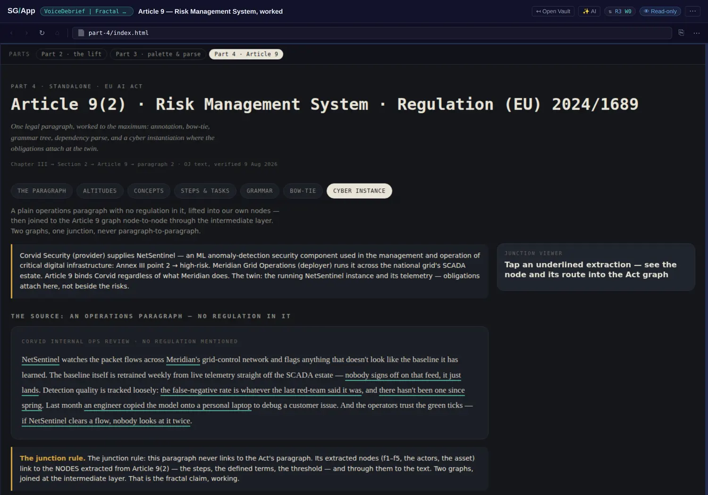
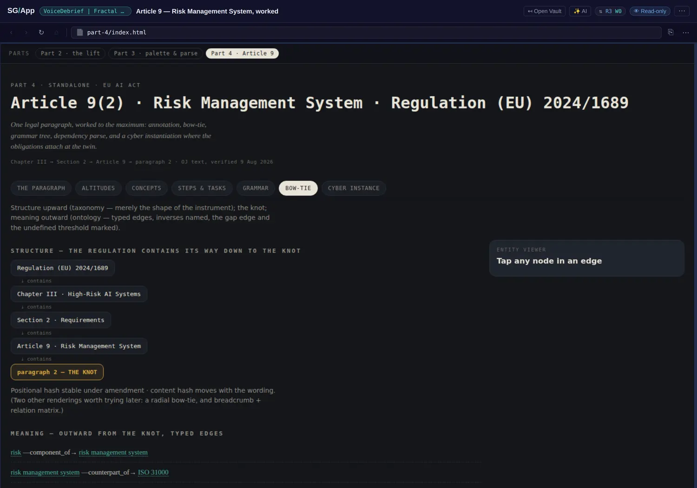

The junction rule
This book argues that the same grammar holds at every altitude and calls it a falsifiable claim rather than a metaphor. Here is the claim with an instance attached. The vault takes a plain operations paragraph with no regulation in it whatsoever and joins it to Article 9(2) of the EU AI Act — and the way it refuses to make that join is the interesting part.
The rule the app states about itself
"This paragraph never links to the Act's paragraph. Its extracted nodes link to the nodes extracted from Article 9(2) — the steps, the defined terms, the threshold — and through them to the text."
Read that twice, because it inverts what almost every compliance tool does. The ordinary move is document to document: a control mapped to a clause, a policy citing an article, a spreadsheet row pointing at a paragraph number. The link is then only as good as the sentence somebody wrote around it, and it carries no structure: you cannot ask it which step of the obligation is unmet, or which defined term the operational fact actually touches, because the link was made above the level where those distinctions live.
The junction rule says: lift both sides into typed nodes first, then join at an intermediate layer, node to node. The obligation attaches where it actually bites — at the running instance and its telemetry — rather than beside the risk in a register.
The worked case
The operations side is a fictional security product watching a fictional grid operator's SCADA estate, and the paragraph is the kind of thing a person actually says in a debrief. The vault lifts three of its sentences into their own nodes:
- "nobody signs off on that feed, it just lands"
- "there hasn't been one since spring"
- "an engineer copied the model onto a personal laptop"
None of those sentences mentions a regulation, a control, or a standard. They are what somebody said. On the other side sits Article 9(2), already lifted into its steps, its defined terms and its threshold. The join happens between those two node sets, through the intermediate layer — which means the resulting graph can answer questions neither document could: which step of the risk-management obligation does an unsigned-off feed touch, and through which defined term.

Two axes through one paragraph
The vault's bow-tie is not the risk practitioner's diagram of the same name. It is one paragraph drawn as a knot with two different axes running through it, and the separation is exactly the one this book's glossary insists on:
- Upward is structure — the taxonomy. Regulation (EU) 2024/1689 → Chapter III → Section 2 → Article 9 → paragraph 2. Broader to narrower, and nothing else.
- Outward is meaning — the ontology. Typed edges with their inverses named, pointing at what the paragraph connects to. Two of those edges are marked as gaps: an undefined threshold, and a missing link. The absence is drawn rather than omitted.
And the line underneath the stack is the one to take away: the positional hash is stable under amendment; the content hash moves with the wording. Two identities for the same paragraph, so a citation can survive a renumbering without pretending the text did not change. That is a concrete answer to a problem this book has so far only argued about in the abstract — how to cite something that both moves and changes.

Six altitudes, each tethered
The altitudes view shows the same provision at six levels of compression, and the property that matters is that each level is tethered to the span below it rather than being an independent summary. That is the same structure as this site's own altitude ladder, arrived at independently in a different artefact for a different purpose — which is the strongest kind of corroboration a design pattern can get.
Why this transfers
The vault states the general form: any domain with two bodies of text that must be reconciled can borrow the junction rule — a standard and an implementation, a contract and a delivery, an incident and a policy. What makes it borrowable rather than bespoke is that neither side needs to know about the other in advance. The operations paragraph was not written with the Act in mind; the Act was not written with SCADA telemetry in mind. Both were lifted on their own terms, and the join was computed afterwards at the layer where the two vocabularies actually meet.
That is this book's don't merge vocabularies argument arriving from the other end. Merging would have forced the operations language into the Act's terms or the reverse; the junction keeps both intact and connects them through a third thing.
- Chapter 6 (a graph at every boundary) gains its missing instance: the fractal claim demonstrated on two unrelated bodies of text, with the junction rule stated in the artefact's own words.
- Chapter 5 (don't merge vocabularies) gains a worked join that keeps both vocabularies intact rather than reconciling them.
- Chapter 3 (the rules) gains the two-hash identity — positional stable under amendment, content moving with the wording — as a concrete provenance mechanism the grammar chapter can point at.
- A candidate for the screenshots item of review r001: this is the clearest single figure in the estate for what "meaning through connectivity" means in practice.